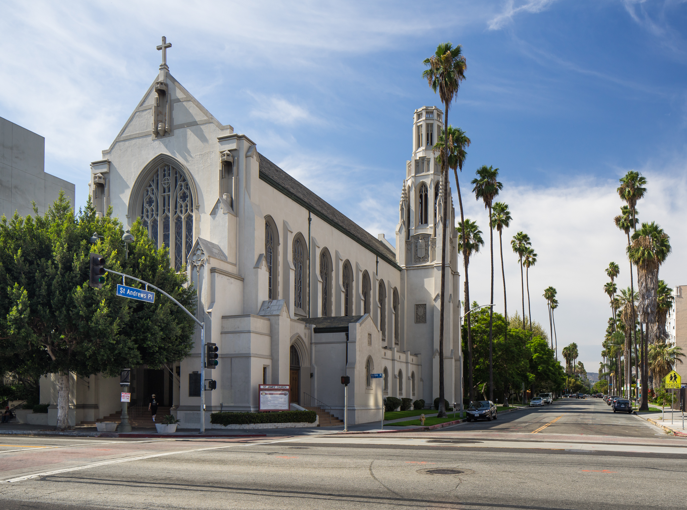

Adriana Perez
Political science
My name is Adriana Perez and I am a political science major at the university of riverside. I am very intrested in the way that international affairs work in politics and how they have an impact on our everyday lives, this is the main intrest of my field of study.
Some things to know about me is that I am a very dilligent worker and fast learner, along with being a huge team player. All of these things make me who I am as a person.
I strive to be someone who balances intelligence with a strong sense of responsibility. When faced with challenges, I take the time to analyze situations carefully before making decisions. My colleagues often appreciate my ability to prioritize tasks effectively, ensuring that deadlines are met without compromising quality. I’m always willing to lend a helping hand, fostering a supportive environment where everyone can grow. I believe that my blend of critical thinking and accountability not only helps me succeed but also earns the trust and respect of those around me.
Experience
Cook
• Cooked meals and prepared them for customers
• Counted inventory
• Colloborated with other cooks on recepies
June 2019 - Present
August 2019 - March 2024
Youth Pastor Assistent
• Helped with community services
• Educated youth
Helped raise funding
• Learned team building excersies
May 2022 - October 2023
Education
UC Riverside
Masters of Business Administration
MBA in International Business
August 2018 - December 2019
North Hollywood High School
High School Diploma
Project Management
June 2024
University of California Riverside
Political Science
Information Systems
September 2024 - May 2028
Portfolio
